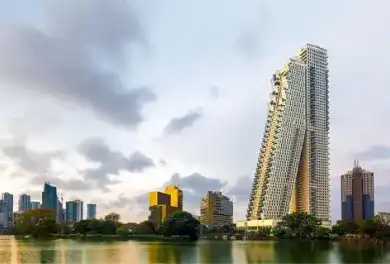

Altair
L'horizon de Colombo, la capitale dynamique du Sri Lanka, a été transformé par l'ajout imposant et élégant d'Altair, une œuvre magistrale de l'architecte renommé Moshe Safdie. Inauguré en 2021, Altair a rapidement captivé l'imagination des habitants et des visiteurs, devenant une icône contemporaine qui allie sophistication, innovation et un design avant-gardiste. Une Vision Verticale Unique
Une Vision Verticale Unique
Altair est bien plus qu'un simple gratte-ciel. C'est une déclaration audacieuse qui repousse les limites de l'architecture moderne. La structure se compose de deux tours interconnectées, s'inclinant gracieusement l'une vers l'autre, créant ainsi une silhouette distinctive qui se démarque dans le panorama urbain. Cette disposition unique évoque une symétrie dynamique, symbolisant l'harmonie et l'unité.
Une Référence à la Culture Locale
Moshe Safdie a intégré des éléments de la culture sri-lankaise dans la conception d'Altair. Des motifs inspirés de l'artisanat local ornent la façade, créant une connexion visuelle entre la modernité de l'architecture et les traditions riches du Sri Lanka. C'est une célébration de l'identité culturelle dans un contexte contemporain. Durabilité au Cœur de la Conception
Durabilité au Cœur de la Conception
Altair n'est pas seulement une prouesse architecturale, mais aussi un exemple de durabilité. Des technologies de pointe ont été intégrées pour optimiser l'efficacité énergétique, réduire l'empreinte carbone et promouvoir un mode de vie respectueux de l'environnement. C'est un témoignage de l'engagement de Moshe Safdie envers une conception responsable. Impact sur la Ville et ses Habitants
En conclusion, Altair de Moshe Safdie à Colombo, Sri Lanka, incarne l'essence même de l'innovation architecturale. C'est une œuvre qui transcende les frontières, captivant le regard tout en intégrant harmonieusement la culture locale et la durabilité. Altair reste non seulement une merveille architecturale, mais aussi un témoignage durable de l'influence positive que l'architecture peut avoir sur la vie urbaine contemporaine.